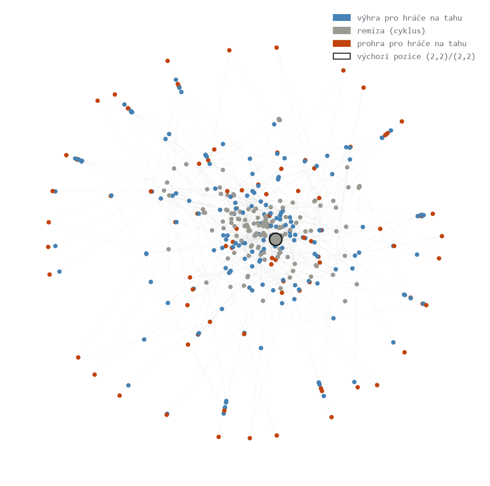
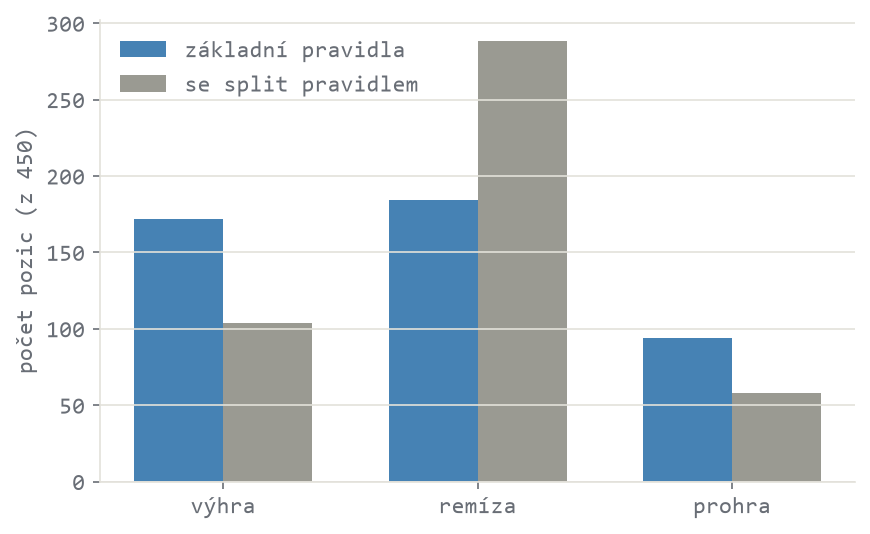
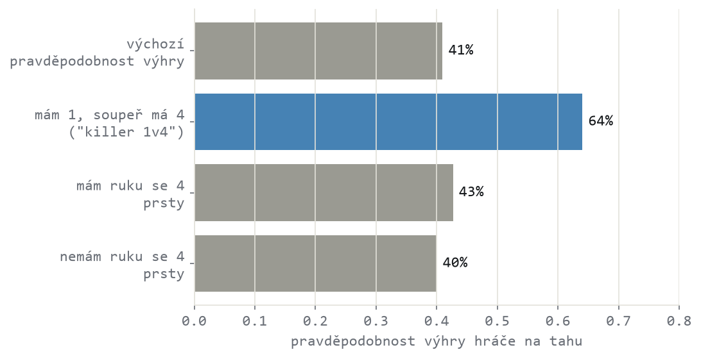
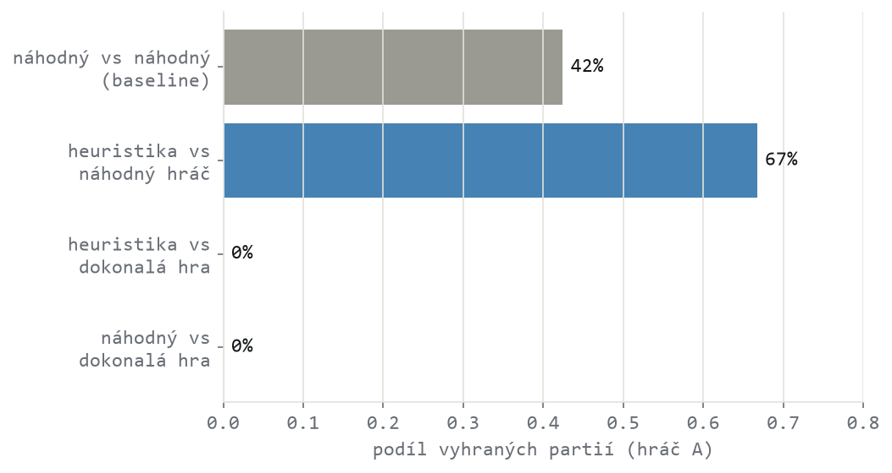
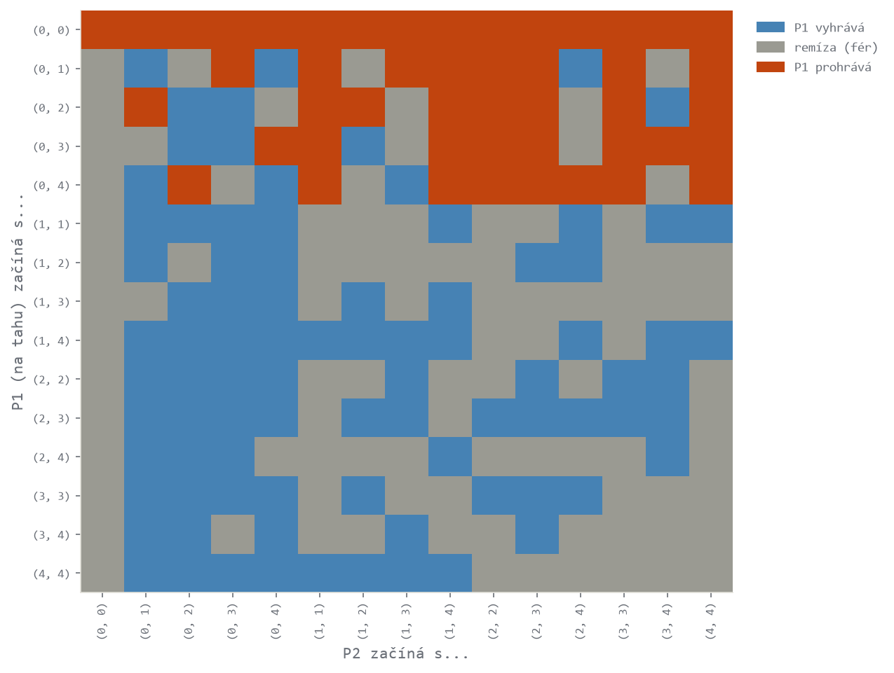

Projekt
Vyhrává, kdo začíná?
Přesné řešení rodinné prstové hry, testování vlastních strategických hypotéz a jeden vyvrácený mýtus
vytvořeno 31. 8. 2026 · aktualizováno 31. 8. 2026
Manželka vymyslela hru. Dvě ruce, na každé dva vztyčené prsty, plácáte se navzájem a sčítáte — klasika z rodiny her, které se ve světě říká Chopsticks. Zeptala se mě, jestli existuje "nejlepší způsob", jak hrát. Nevěděl jsem — ale z pravidel se dalo pár tušených pouček odhadnout rovnou. Prstová aritmetika modulo 5 přímo napovídá pár intuic: třeba že kombinace jedničky proti soupeřově čtyřce je silná (1 + 4 = 5 ≡ 0, vyřadí ruku), nebo že mít vlastní ruku se 4 prsty je nebezpečně zranitelné.
Jenže odhad z pravidel není totéž co ověřený fakt. Zněl věrohodně, ale věrohodně zní i spousta věcí, co nejsou pravda.
Tak jsem hru skutečně vyřešil — všech 450 pozic, přesně, ne odhadem — a své vlastní tušené poučky jsem si nechal ověřit daty místo abych jim věřil naslepo. Jedna z nich se ukázala jako opak pravdy.
pravidla hry
vysvětlení pro každéhoDva hráči, každý má dvě ruce. Na začátku má každá ruka 2 vztyčené prsty. Hráči se střídají po tazích. Jeden tah je "plácnutí" — hráč na tahu přičte počet prstů své ruky k počtu prstů na jedné ze soupeřových živých rukou. Součet se počítá modulo 5: dosáhne-li přesně 5, ruka je vyřazená (0 prstů); je-li součet vyšší, zůstává zbytek po dělení pěti (např. 4 + 3 = 7 → zůstanou 2 prsty).
Hráč prohrává, jakmile má obě ruce vyřazené. Existuje i volitelné pravidlo split: má-li hráč jednu ruku vyřazenou a druhou se sudým počtem prstů, může ji na svém tahu rozdělit na dvě (např. 4 → 2 a 2) a vrátit tak vyřazenou ruku do hry. Není jisté, jestli je tohle pravidlo součástí domácí verze — proto níže řeším obě varianty vedle sebe.
proč přesné řešení, ne simulace
Dalo by se napsat program, co odehraje miliony náhodných partií, a sledovat, co vyhrává. Nebylo by to ale spolehlivé: hra obsahuje cykly (žádná strana nemusí nikdy udělat rozhodující chybu), takže náhodná simulace špatně rozpozná, kdy je pozice skutečně remízová, a navíc vůbec nezachytí, jak by hra dopadla mezi dvěma dokonale racionálními hráči.
Naštěstí to není potřeba. Ruce mohou mít 0–4 prstů a na pořadí rukou jednoho hráče nezáleží, takže existuje jen 15 možných konfigurací rukou na hráče. Dohromady s tím, kdo je na tahu, dá to 15 × 15 × 2 = 450 pozic — dost málo na to, aby šla hra vyřešit úplně, algoritmem zvaným retrográdní analýza (stejný princip jako u koncovkových tabulek v šachu nebo dámě): od koncových pozic (prohra) se postupuje zpětně a každé pozici se přiřadí, jestli je pro hráče na tahu výhra, prohra, nebo remíza — a přesně za kolik tahů.
je výchozí pozice fér?
První otázka: má hráč, co začíná, výhodu? Odpověď je ne — pozice (2,2) proti (2,2) je při dokonalé hře remíza. Ani jeden hráč si nemůže vynutit výhru; kdo vyhraje, záleží čistě na tom, kdo udělá chybu. Manželka tedy nevědomky vybrala jednu z fér startovních konfigurací.
To je vidět i vizuálně. Níže je celý dosažitelný stavový prostor hry (398 pozic ze 450 celkových) jako síťový graf — uzly jsou pozice, hrany jsou legální tahy. Modrá = výhra pro hráče na tahu, šedá = remíza, terakota = prohra. Výchozí pozice (černý obrys) leží přímo uprostřed hustého šedého jádra, kde se hra dá donekonečna protahovat, aniž by kdokoli udělal chybu.

Celý dosažitelný stavový prostor (základní pravidla, bez split). Remízové pozice tvoří propojený střed — hra se v nich dá cyklit; výherní a prohrané pozice visí spíš na okrajích, blíž ke konci hry.
pravidlo split hru zásadně zklidňuje
Porovnal jsem obě varianty pravidel na všech 450 myslitelných konfiguracích rukou (ne jen na těch dosažitelných ze startu). Bez pravidla split je remíza 41 % pozic, výhra 38 % a prohra 21 %. Se split pravidlem remízy skočí na 64 % pozic — logicky: možnost oživit vyřazenou ruku dává obránci skoro vždy únikovou cestu.

Rozdělení výsledků napříč všemi 450 pozicemi, pro obě varianty pravidel. Se split pravidlem je hra podstatně "remízovější".
Prakticky to znamená: pokud vaše domácí verze pravidlo split používá, je hru mnohem těžší fakticky někoho porazit, než kdyby se hrálo bez něj.
testování vlastních hypotéz daty
Měl jsem dvě konkrétní hypotézy: že kombinace "mám 1 prst, soupeř má 4" je silná útočná zbraň (1 + 4 = 5 ≡ 0, vyřadí ruku) a že mít vlastní ruku se 4 prsty je nebezpečně zranitelné. První hypotézu jsem otestoval na datech ze všech pozic — a drží: pravděpodobnost výhry hráče na tahu vyskočí z běžných 41 % na 64 %, když má útočník jedničku a soupeř čtyřku (byť na relativně menší podmnožině pozic, n=50 z 420).
41 % → 64 % šance na výhru s kombinací "1 proti soupeřově 4"
Druhá hypotéza ale neplatí. Mít ruku se 4 prsty nemá na pravděpodobnost výhry prakticky žádný vliv (43 % vs. 40 % bez ní) — a v přesnějším modelu (logistická regrese kontrolující na počet živých rukou a další vlastnosti pozice současně) dokonce znatelně snižuje šanci na prohru (na necelou polovinu, poměr šancí 0,45). Čtyřka je spíš ochranná než zranitelná — přesný opak toho, co jsem čekal.

Podmíněná pravděpodobnost výhry hráče na tahu za různých podmínek, napříč všemi pozicemi. "Killer 1v4" má reálný efekt; vlastnictví ruky se 4 prsty prakticky žádný.
Nejsilnější prediktor výhry ale nebyla žádná konkrétní hodnota na ruce — byl to prostě počet živých rukou. Se dvěma živými rukama proti soupeřově jedné vyhrává hráč na tahu v 90 % případů; s jednou rukou proti soupeřovým dvěma prohrává ve 70 %. Konkrétní čísla na rukou rozhodují mnohem méně než to, kolik jich vůbec máte ve hře.
pomáhají tyhle rady fakt vyhrát?
Statistický test na vyřešených pozicích je jedna věc. Otázka, co zajímá hráče u stolu, je jiná: pomůže mi tahle poučka opravdu vyhrát víc partií? Odpověď jsem získal simulací — bot, co hraje čistě podle mých tušených pouček (bez nahlížení do vyřešené tabulky), proti náhodnému hráči a proti dokonalé hře.
Proti náhodnému hráči heuristika skoro zdvojnásobí šanci na výhru oproti tomu, jak by dopadla náhodná hra sama proti sobě (67 % vs. 42 % baseline). Proti dokonalé hře je ale úplně bezmocná — 0 % výher, stejně jako čistě náhodná hra.

Podíl vyhraných partií (3 000 simulovaných her na zápas, se střídáním, kdo hraje první). Heuristika reálně pomáhá proti běžnému soupeři, ale negarantuje nic proti hráči, co zná vyřešenou tabulku.
Poctivý závěr: tušené poučky nejsou skutečná strategie, spíš rychlá zkratka. Fungují dobře proti komukoli, kdo nehraje dokonale — což je skoro každý — ale nejsou matematická jistota.
nesymetrické starty a handicap
Co když hra nezačíná (2,2) proti (2,2)? Spočítal jsem výsledek pro všech 225 možných kombinací startovních rukou obou hráčů — i těch, kde obě strany nezačínají stejně. Ze 210 skutečně nesymetrických kombinací (obě strany začínají jinak) jich zůstává fér (remíza) 84, tedy 40 %.

Kdo vyhrává při daném startu, pro každou kombinaci startovních rukou P1 a P2 (hráč 1 je na tahu první). Modrá = P1 vyhrává, šedá = remíza, terakota = P1 prohrává.
To se dá využít prakticky — třeba jako handicap, když proti sobě hraje zkušenější hráč se začátečníkem. Mapa přesně ukazuje, které nevyrovnané starty jsou pořád fér a které dávají výhodu jedné straně.
jak velká je to vlastně hra?
Proto šlo hru vyřešit celou za zlomek sekundy na běžném notebooku — je extrémně malá ve srovnání se známými hrami. Hodnoty pro ostatní hry jsou přibližné, běžně citované odhady state-space complexity z literatury, ne výstup tohoto projektu.
| hra | přibl. počet pozic |
|---|---|
| tahle hra (dosažitelné pozice) | 398 |
| tahle hra (všechny konfigurace) | 450 |
| piškvorky (tic-tac-toe) | 5 478 |
| Connect Four | 4,5 × 10¹² |
| dáma (checkers) | 5 × 10²⁰ |
| šachy (odhad) | ~10⁴⁷ |
| go, 19×19 (odhad) | ~10¹⁷⁰ |
Piškvorky mají řádově desetitisíce pozic a přesto je většina lidí nevyřeší v hlavě dokonale. Tahle hra je o další řád menší — proto šlo místo odhadu nebo natrénované AI použít úplně přesné řešení.
co z toho plyne
- Výchozí pozice (2,2)/(2,2) je fér — nikdo nemá vynucenou výhru, záleží na chybách.
- Pravidlo split hru zásadně zklidňuje — remízy skočí ze 41 % na 64 % pozic.
- Kombinace "1 proti soupeřově 4" reálně pomáhá (41 % → 64 % šance na výhru); "ruka se 4 je zranitelná" je mýtus — ve skutečnosti mírně chrání.
- Počet živých rukou rozhoduje víc než konkrétní čísla na nich.
- Tušené poučky skoro zdvojnásobí šanci proti běžnému hráči, ale proti dokonalé hře nic negarantují.
- 40 % nesymetrických startů zůstává fér — použitelné jako handicap.
limity
- Pravidla vycházejí z jednoho popisu manželčiny hry — nejsou ověřená proti tomu, jak se hra v praxi skutečně hraje na dalších detailech (např. co přesně se počítá jako legální split, nebo jestli existují další varianty pravidel).
- Není jasné, jestli je pravidlo split součástí domácí verze — proto je v celém textu řešeno jako samostatná varianta, ne jako potvrzené pravidlo.
- Statistické testy (killer 1v4, vliv ruky se 4 prsty) běží nad kompletním výčtem všech pozic, ne nad náhodným vzorkem — klasická interpretace p-hodnot (nezávislá pozorování) tu neplatí doslovně, protože sousední pozice jsou navzájem provázané stavy jednoho grafu. Efekty berte jako míru síly a směru, ne jako přísný inferenční důkaz.
- Bot řízený heuristikami hraje jednoduchá, pevná pravidla — reální hráči si všímají víc kontextu, takže 67% výhra proti náhodnému hráči je spíš dolní odhad reálné výhody, ne přesné číslo pro konkrétního člověka.
vyzkoušej si to sám
Zadejte, kolik prstů má kdo na stole a kdo je na tahu — nástroj vrátí verdikt a doporučené tahy z kompletně vyřešené tabulky.
Načítám data…
kód a data
- repogithub.com/Dobes-Michal-Tobias/ChopsticsGame
- Solver, statistické testy a bot simulace jsou v
src/game.py, celý postup krok za krokem v notebooocích (notebooks/01–03).